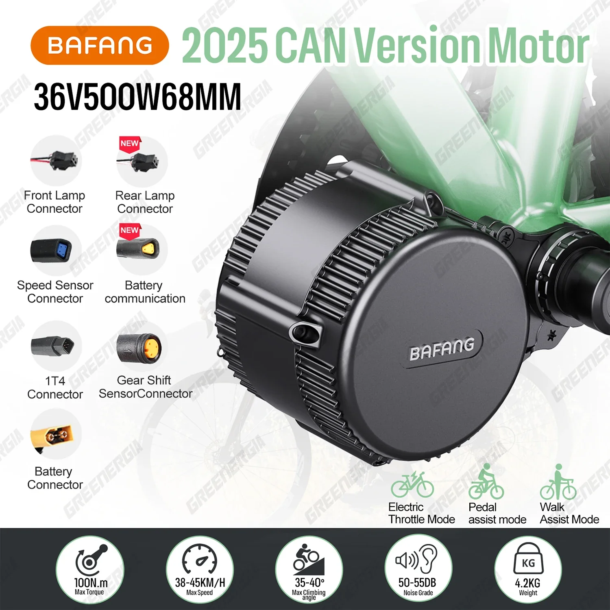
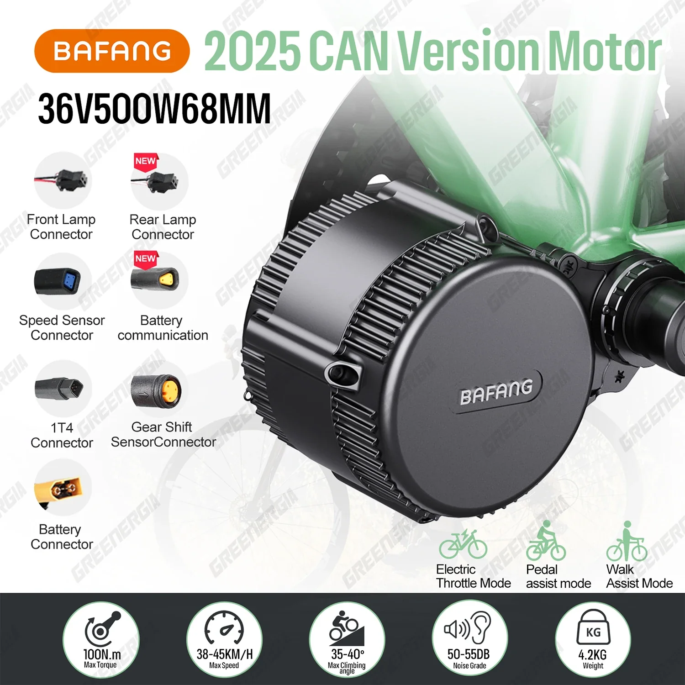
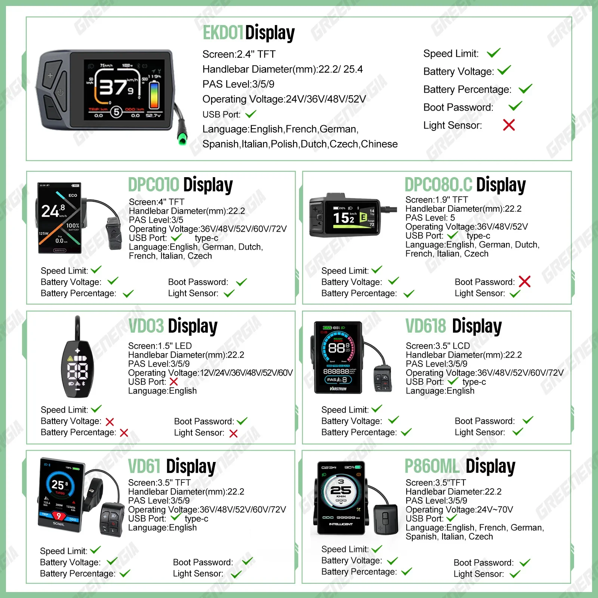
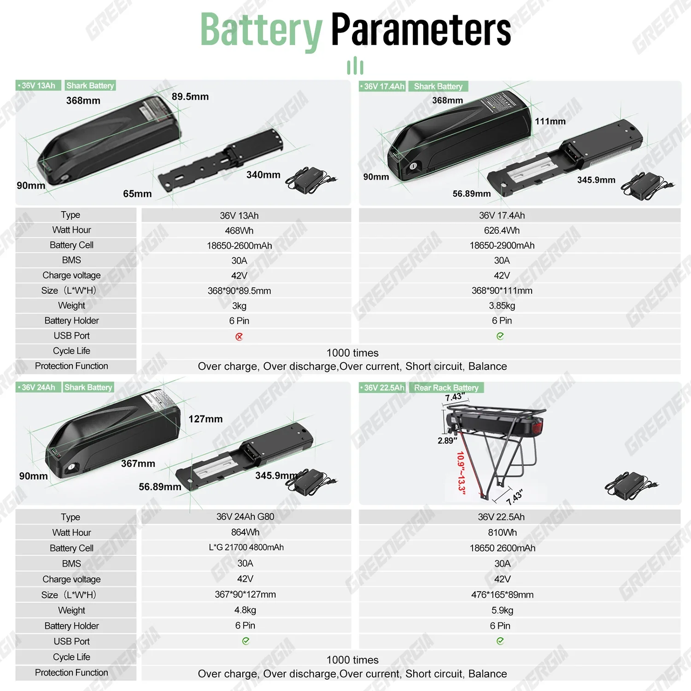
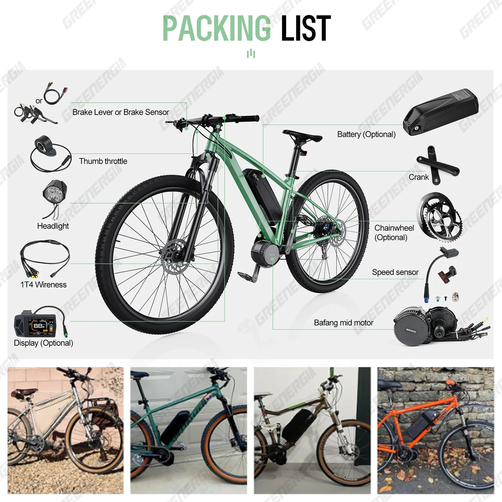
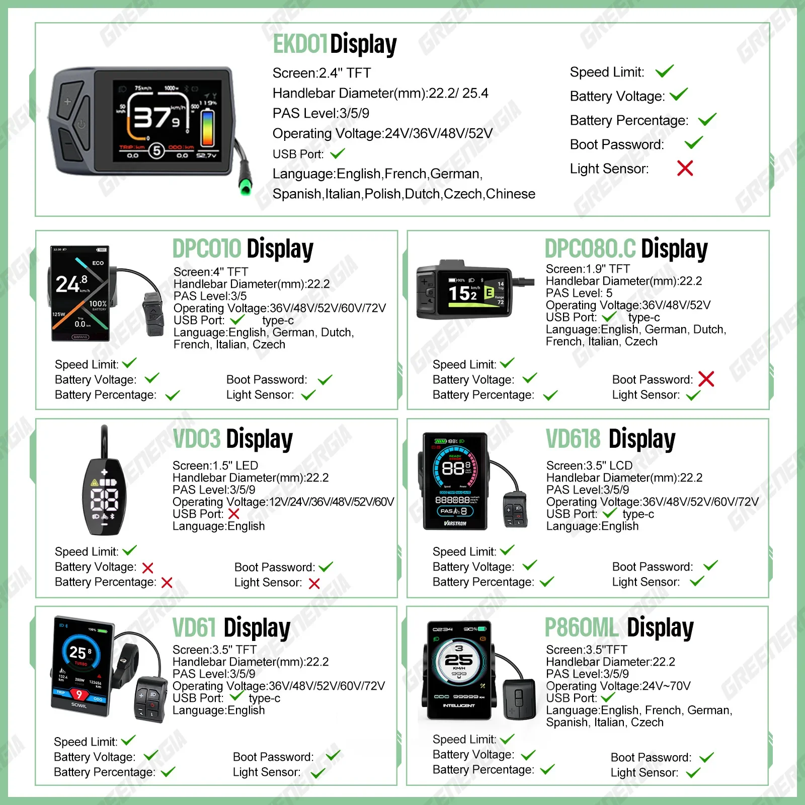
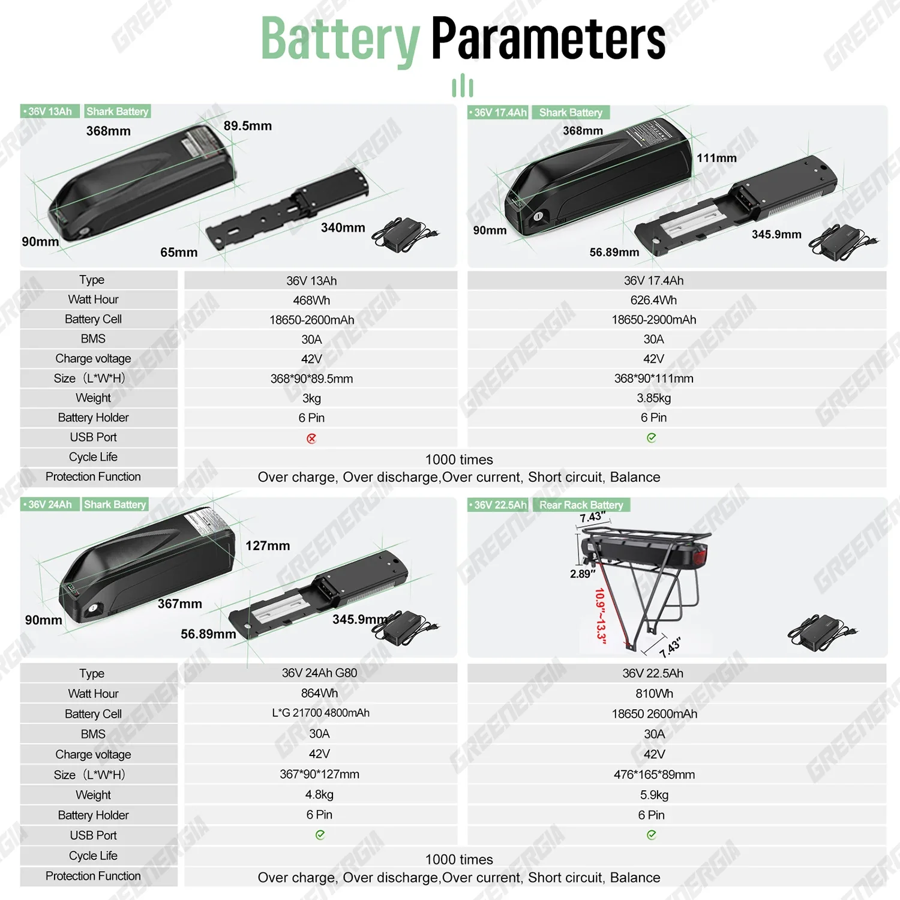
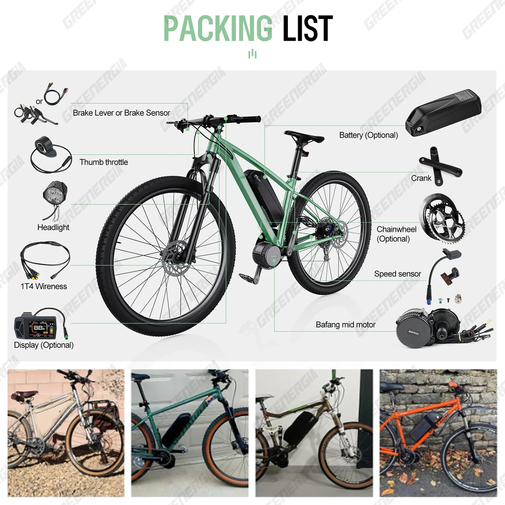

 





Kit de conversion pour vélo électrique BAFANG CAN BBS02B avec moteur central 36 V 500 W, écran M315 et option batterie 36 V 13 Ah/24 Ah
Le kit de conversion pour vélo électrique Bafang CAN BBS02B 36V 500W avec moteur central est une solution puissante et polyvalente pour transformer votre vélo en vélo électrique.
- Placement du moteur central : Le moteur est intégré au pédalier, offrant un transfert de puissance optimal et une transmission efficace du couple aux pédales.
- Puissance élevée de 500 W : Profitez d'une accélération grisante et d'une excellente motricité en montée grâce à ce moteur robuste.
- Intégration de la technologie CAN Bus :
- Compatibilité avec différentes options de batterie : Choisissez parmi les batteries 36 V 13 Ah, 17,4 Ah ou 24 Ah pour une puissance et une autonomie adaptées à vos besoins.
Ce kit de conversion pour vélo électrique est conçu pour répondre aux exigences de différents styles de conduite et de tous types de terrains.
- Tension : 36 V
- Puissance du moteur : 500 W
- Type de moteur : Central
- Type de contrôleur : Compatible CAN Bus
- Compatibilité batterie : Options 36 V 13 Ah, 17,4 Ah et 24 Ah disponibles (vendues séparément)
Ce kit de conversion pour vélo électrique offre de nombreux avantages, aussi bien aux cyclistes expérimentés qu’aux débutants.
- Performances améliorées : Gravissez les côtes sans effort, accélérez rapidement et profitez d’une expérience de conduite plus fluide.
- Autonomie étendue : Choisissez parmi une gamme de batteries celle qui correspond à vos besoins en termes de kilométrage.
- Respectueux de l’environnement : Réduisez votre empreinte carbone en optant pour un vélo électrique alimenté par des sources d’énergie renouvelables.
- Trajets domicile-travail facilités : Évitez les embouteillages et arrivez à destination frais et dispos pour travailler ou aller au travail. Détendez-vous.
Le kit de conversion Bafang CAN BBS02B est conçu pour une installation simple sur une variété de cadres de vélo.
Des instructions détaillées sont généralement fournies avec le kit, décrivant les étapes et les outils nécessaires à une installation réussie. Il est essentiel de lire attentivement ces instructions et de s'assurer que les connexions et le montage sont corrects avant d'utiliser votre vélo électrique.